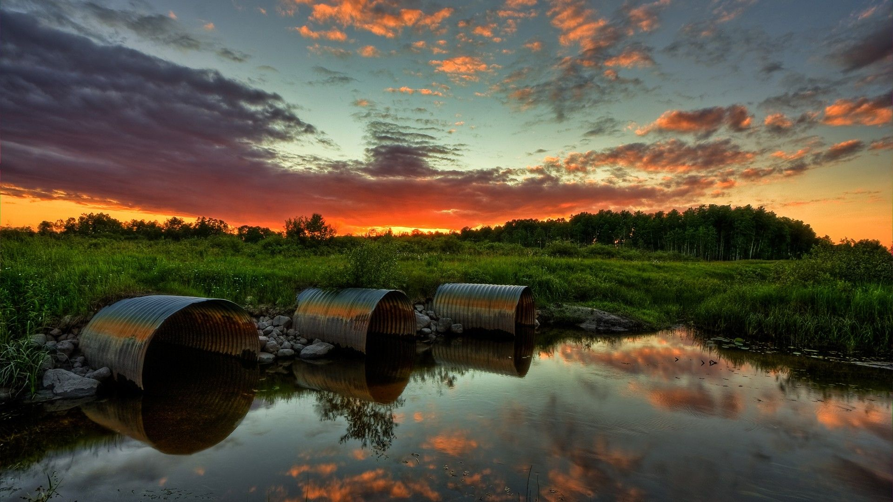
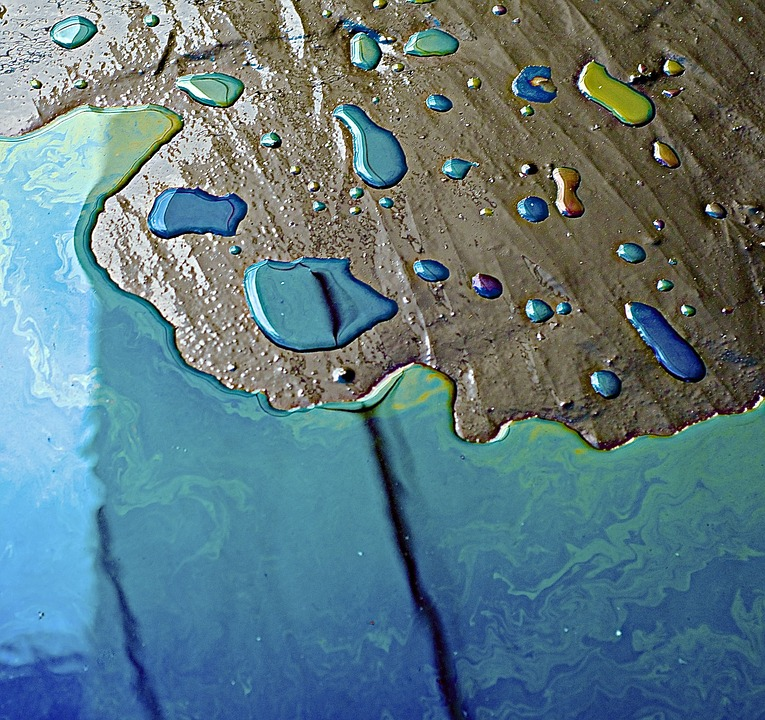
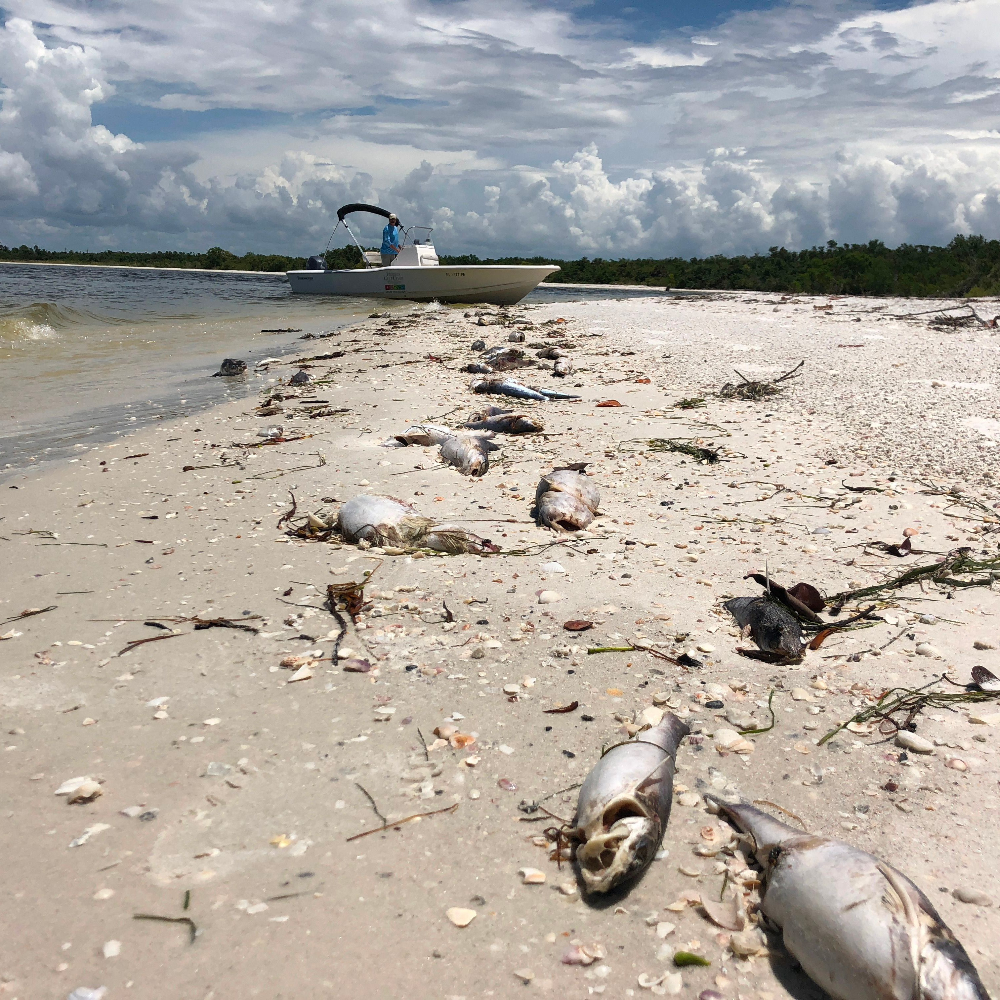

What is water Pollution
 Water pollution is an appalling problem, powerful enough to lead the world on a path of destruction. Water is an easy solvent, enabling most pollutants to dissolve in it easily and contaminate it. The most basic effect of water pollution
is directlysuffered by the organisms and vegetation that survive in water, including amphibians. On a human level, several people die each day due to consumption of polluted and infected water.
As per the Economist report (dated
2008) each day over 1000 children die of diarrheal sickness in India and the numbers have only increased alarming in the last five years. Water is polluted by both natural as well as man-made activities. Volcanic eruptions, earthquakes,
Tsunamis, etc are knownto alter water and contaminate it, also affecting ecosystems that survive under water.
Various Causes of Water Pollution
Industrial waste
Industries produce a huge amount of waste which contains toxic chemicals and pollutants which can cause air pollution and damage to us and our environment.
They contain pollutants such as lead, mercury, sulfur, asbestos, nitrates, and many other harmful chemicals.
Sewage and wastewater
the sewage and wastewater that is produced by each household is chemically treated and released into the sea with fresh water. The sewage water carries
harmful bacteria and chemicals that can cause serious health problems. Pathogens are known as a common water pollutant; The sewers of cities house several pathogens and thereby diseases.
Accidental oil leakage
Oil spill poses a huge concern as a large amount of oil enters into the sea and does not dissolve with water; thereby opens problem for local marine wildlife
such as fish, birds and sea otters. For e.g.: a ship carrying a large quantity of oil may spill oil if met with an accident and can cause varying damage to species in the ocean depending on the quantity of oil spill, size of the ocean,
the toxicity of pollutant.
Underground storage leakage
Transportation of coal and other petroleum products through underground pipes is well known. Accidentals leakage may happen anytime and may cause
damage to the environment and result in soil erosion.
Radioactive waste
Nuclear energy is produced using nuclear fission or fusion. The element that is used in the production of nuclear energy is Uranium which is a highly toxic
chemical. The nuclear waste that is produced by radioactive material needs to be disposed of to prevent any nuclear accident. Nuclear waste can have serious environmental hazards if not disposed of properly. Few major accidents have
already taken place in Russia and Japan.
Effects of Water Pollution
Human Health
We all drink water that comes from a source: this may be a lake or local river. In countries that have poor screening and purification practices, people often get
water-borne disease outbreaks such as cholera and tuberculosis. Every year, there are an estimated 3–5 million cholera cases and 100,000–120,000 deaths due to cholera. In developed countries, even where there are better purification
methods, people still suffer from the health effects of water pollution.
Ecosystems
Nutrient pollution from upstream (creeks and streams) often flow downhill and even travel miles into other larger water bodies. The effect is that, it breeds algae
growth and causes the growth of many more water organism. This algae attack affects fish and other aquatic animals by absorbing and reducing their oxygen supply. Algae growth also clogs fish gills. Naturally, the order of ecosystems
in that water are affected negatively, as the destruction or introduction of any foreign organism alter the entire food chain in there.
Death of animals
Animals, including water animals die when water is poisoned for various reasons. Other animals are stressed and their populations are endangered. In a classic
case of marine pollution in recent time, 16000 miles of a US coastline was affected by an oil spill. That water pollution caused a lot of damage and deaths of many animals. Over 8,000 animals were reported dead just 6 months after
the spill.
Economic cost
From the above it is evident that there is some real financial implications that will result from water pollution. It can cost a lot more to purify drinking water
that takes its source from nutrient-polluted water bodies. Fishing stock is affected negatively when there is a depletion of oxygen. In places where there are water activities or sports, lots of money is spent to clean up the water
from algae blooms and the like.
Preventive Measures for Water Pollution

Keep out oils, fat, or grease from the sink
Desist from pouring cooking oil, fat or grease down the kitchen sink. Instead, keep a jar that collects all the fats, grease or oil
then discard in solid waste.
Desist from using the toilet as a bin
Most people discard dust clothes, paper wastes, synthetic materials, and wrappers in the toilet. The destructive elements of these materials
may finally end up in the oceans, lakes or rivers. Desisting from this habit can considerably prevent water pollution.
Reduce the use of pesticides and fertilizers
Excessive use of herbicides, pesticides, and fertilizers leads to water pollution as the chemicals contained in the products often
find way into the water systems through surface runoff or infiltration into the soil. Minimizing their usage or using organic methods for pest, weed, and disease control can appreciably reduce water pollution.
Proper sewage treatment and management
Proper sewage treatment is required to limit the amount of toxic substances that normally end up in water systems such as lakes, rivers,
and oceans. Also, individual homes that use septic tanks or cellar drains need to ensure proper management of their home sewage to avoid pollution.
Support green-oriented companies
These are the companies that take creative initiatives to reduce water pollution. For instance, some green cleaning product companies make the
packaging materials by using recycling plastics collected from the oceans. Also, some sewage treatment firms now clean wastewater without the use of chemicals. Supporting and using the services of such companies can greatly help reduce
water pollution.